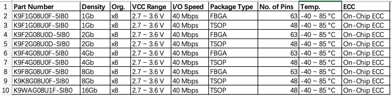

存储芯片
此处方糖的存储芯片是的Nand Flash：Samsung K9F1G08U0F
从电路板上：

看到了：
SAMSUNG 810
K9F1G08U0F
SCB0
CUA006HMN
然后通过研究搞清楚是：
三星Nand Flash存储芯片：K9F1G08U0F
K9F1G08U0F- 基本介绍
- K9F1G08U0F采用
128Mx8bit，是1Gb的NAND闪存，备用32Mbit。 - 该器件采用
3.3V VCC封装。 - 其NAND单元为固态应用市场提供最具成本效益的解决方案。
- 可以在（
2K + 64）字节页面上以典型的400us执行编程操作。 - 并且可以在（
128K + 4K）字节块上以典型的4.5ms执行擦除操作。 - 数据寄存器中的数据可以每个字节
25ns周期时间读出。 - I/O引脚用作地址和数据输入/输出以及命令输入的端口。
- 片上写入控制器可自动执行所有编程和擦除功能，包括脉冲重复（如果需要）以及内部验证和数据裕量。
- K9F1G08U0F采用
- 总结
K9F1G08U0F是大型非易失性存储应用的最佳解决方案- 例如
固态文件存储和其他需要非易失性的便携式应用。
- 例如
- 参数
Density=容量：1GbOrg.=Organization=架构：x8VCC Range=VCC 范围：2.7 ~ 3.6 VI/O Speed=I/O速度：40 MbpsPackage Type=封装类型：TSOPNo. of Pins=针脚数目：48Temp.=工作温度：-40 ~ 85 °CECC=ECC校验：On-Chip ECC=片上ECC
- 基本介绍
- SCB0
K9F1G08U0F-SCB0的Temperature Under Bias的Rating是-10 to +125- 对应其他的是：
K9F1G08U0F-SxB0的Temperature Under Bias的Rating是-40 to +125
- 其他类似的型号
- 
关于Nand Flash的更多更专业的解释
详见之前教程：【详解】如何编写Linux下Nand Flash驱动